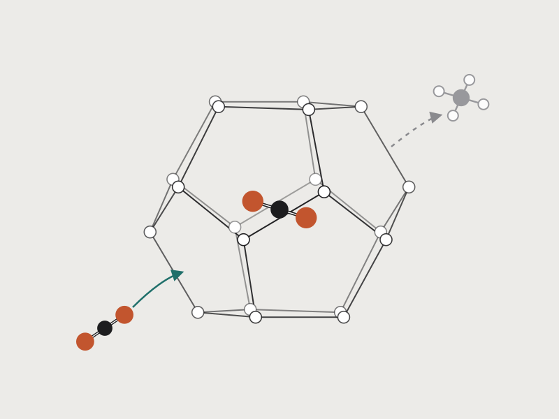
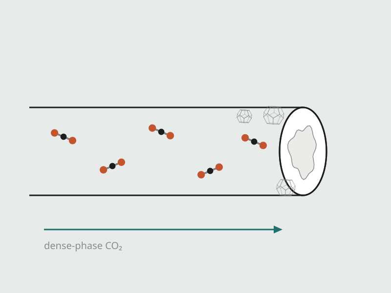
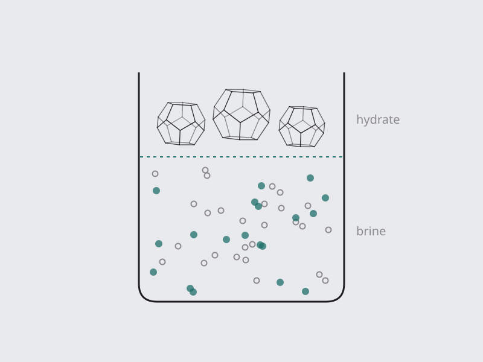
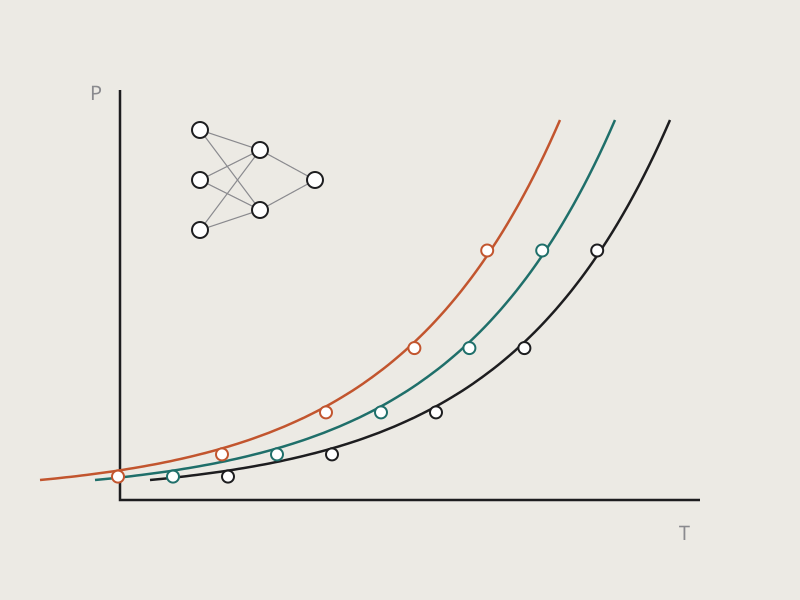

Research

Gas Hydrates & CO2 Storage
Natural gas hydrates hold vast amounts of methane in ice-like cages of water. By injecting CO2 or flue gas, CH4 can be recovered while CO2 is stored in the same cages. We quantify guest exchange cage by cage with in-situ Raman spectroscopy and powder X-ray diffraction, study depressurization-assisted replacement in sediments, and explore how hydrate formation and carbon mineralization can trap CO2 in marine and geological formations.
Selected publications
- J. Mok, W. Choi, Y. Seo Time-dependent observation of a cage-specific guest exchange in sI hydrates for CH4 recovery and CO2 sequestration. Chemical Engineering Journal, 389, 124434 (2020). doi:10.1016/j.cej.2020.124434
- W. Choi, J. Mok, J. Lee, Y. Lee, J. Lee, A.K. Sum, Y. Seo Effective CH4 production and novel CO2 storage through depressurization-assisted replacement in natural gas hydrate-bearing sediment. Applied Energy, 326, 119971 (2022). doi:10.1016/j.apenergy.2022.119971
- J. Mok, W. Choi, Y. Seo The dual-functional roles of N2 gas for the exploitation of natural gas hydrates: An inhibitor for dissociation and an external guest for replacement. Energy, 232, 121054 (2021). doi:10.1016/j.energy.2021.121054
- J. Mok, J. Lee, W. Choi, Y. Lee, Y. Seo Enhanced CH4–CO2 replacement in structure H hydrates: Kinetics, mechanisms, and implications for CO2 storage and CH4 production. ACS Sustainable Chemistry & Engineering, 12(21), 8148–8155 (2024). doi:10.1021/acssuschemeng.4c01124

CO2 Capture, Transport & Flow Assurance
Every step of the CCS chain meets the phase behavior of CO2–water systems. We develop hydrate- and semiclathrate-based gas separation, study the growth and morphology of CO2 hydrates and Joule–Thomson cooling during pipeline operations, and design inhibitors that keep dense-phase CO2 flowing safely.
Selected publications
- J. Mok, A.K. Sum An efficient and sustainable method for improved CO2 capture based on gas hydrate condensation. Chemical Engineering Journal, 513, 162971 (2025). doi:10.1016/j.cej.2025.162971
- J. Mok, W. Choi, A.K. Sum Dynamics and morphology of CO2 hydrate growth: Implications for CO2 transport and storage. ACS Sustainable Resource Management, 3(4), 1237–1245 (2026). doi:10.1021/acssusresmgt.6c00160
- J. Mok, A.K. Sum, R. Kini, A. Teixeira, L.S. Valim, M. Kane Differentiating cooling effect for CO2 systems on pressure changes in Joule-Thomson expansion and volume expansion: Implications in CCS. Applied Thermal Engineering, 293, 130509 (2026). doi:10.1016/j.applthermaleng.2026.130509
- J. Mok, W. Choi, S. Kim, J. Lee, Y. Seo NaCl-induced enhancement of thermodynamic and kinetic CO2 selectivity in CO2 + N2 hydrate formation and its significance for CO2 sequestration. Chemical Engineering Journal, 451, 138633 (2023). doi:10.1016/j.cej.2022.138633

Hydrate-Based Desalination & Water Treatment
When hydrates form, salts are excluded from the crystal. We established the theoretical maximum water yield and efficiency of hydrate-based desalination from thermodynamic correlations, use it to benchmark hydrate formers, and extend the approach to hypersaline brines and contaminated water.
Selected publications
- J. Mok, W. Choi, Y. Seo Theoretically achievable efficiency of hydrate-based desalination and its significance for evaluating kinetic desalination performance of gaseous hydrate formers. Desalination, 524, 115487 (2022). doi:10.1016/j.desal.2021.115487
- J. Mok, M. Park, W. Choi, K.C. Kang, S. Lee, J.D. Lee, Y. Seo Investigation of theoretical maximum water yield and efficiency-optimized temperature for cyclopentane hydrate-based desalination. Water Research, 246, 120707 (2023). doi:10.1016/j.watres.2023.120707
- J. Mok, W. Choi, Y. Seo Evaluation of kinetic salt-enrichment behavior and separation performance of HFC-152a hydrate-based desalination using an experimental measurement and a thermodynamic correlation. Water Research, 193, 116882 (2021). doi:10.1016/j.watres.2021.116882
- S. Mun, S. Kim, J. Mok, W. Go, K.C. Kang, S. Lee, J.D. Lee, Y. Seo Experimental and computational analysis of R152a hydrate-based desalination: A promising solution for hypersaline brine treatment. Chemical Engineering Journal, 500, 157205 (2024). doi:10.1016/j.cej.2024.157205

Data-Driven Thermodynamics
We combine experimental phase-equilibrium data with machine learning and molecular simulation to predict hydrate stability in complex systems containing salts and organic inhibitors, supporting faster design of CO2 storage and transport processes.
Selected publications
- J. Mok, W. Go, Y. Seo Predicting phase equilibria of CO2 hydrate in complex systems containing salts and organic inhibitors for CO2 storage: A machine learning approach. Energy & Fuels, 38(6), 5322–5333 (2024). doi:10.1021/acs.energyfuels.3c04930
- S. Yun, J. Mok, H.G. Jang, Y. Seo Acceleration of CO2 hydrate formation by N2 micronanobubbles: Insights from experiments and molecular simulations. Energy & Fuels, 39(12), 5845–5855 (2025). doi:10.1021/acs.energyfuels.5c00430
- S. Mun, W. Go, J. Mok, S. Kim, H. Jang, Y. Seo Amino acid derivatives as kinetic hydrate inhibitors for CO2 transport and storage: Mechanistic insights from experiments and molecular dynamics simulations. Chemical Engineering Journal, 548, 181769 (2026). doi:10.1016/j.cej.2026.181769